Problem. I wanted a short browser game in the style of Wordle, but for DC characters instead of letters. Players get attribute clues after each guess and try to find the secret character before they run out of attempts.
Users. Anyone who knows comic characters roughly and wants a quick round — no account, no install.
Solution. A single Node/Express app (app/server.js). The server picks a character from characters.json, keeps the answer, and returns match / partial / higher / lower feedback per attribute. Games end on a correct guess or after 8 tries.
How to try it
docker compose up -d --build # then open http://localhost:8000 # optional load: node scripts/load.js --duration 60
What works: new games, guesses with feedback, win/lose, Prometheus /metrics, JSON logs on stdout, and the chaos endpoints used in Part E.
Prometheus scrapes the app every 5s. Grafana shows the charts below. Node Exporter scrapes the Docker Desktop Linux VM, labeled machine="docker-desktop-linux-vm".
| Metric | Purpose | Type | Unit | Labels | Where |
|---|---|---|---|---|---|
http_requests_total | Request volume / failures | Counter | requests | method, route, status_code | Request middleware |
http_request_duration_seconds | Latency / p95 | Histogram | seconds | method, route | Same middleware |
games_active | Games in progress | Gauge | games | — | Gauge collect() |
guesses_per_game | Guesses when a game ends | Summary | guesses | result | On win/loss (~10 min) |
games_started_total / games_finished_total | Business volume | Counter | games | result on finished | Game routes |
guesses_by_character_total | Most guessed characters (my own) | Counter | guesses | character | Accepted guess |
demo_requests_total | Cardinality demo | Counter | requests | optional request_id | /api/demo/hit |
node_* | CPU, memory, disk, network | various | various | machine | Node Exporter |
All four Prometheus types are used across the project (not four of each category).
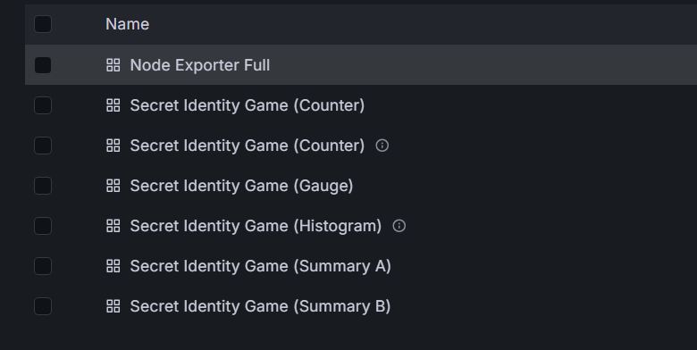
Counter — RPS by route
sum by (route) (rate(http_requests_total[1m]))
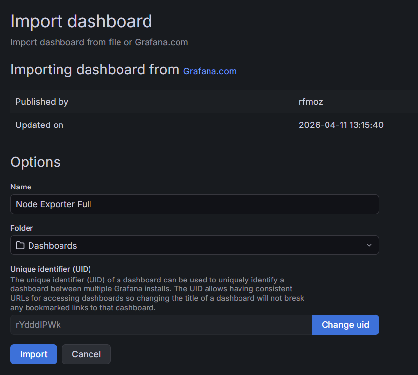
Counter — failed requests
sum by (status_code) (rate(http_requests_total{status_code!~"2.."}[1m]))
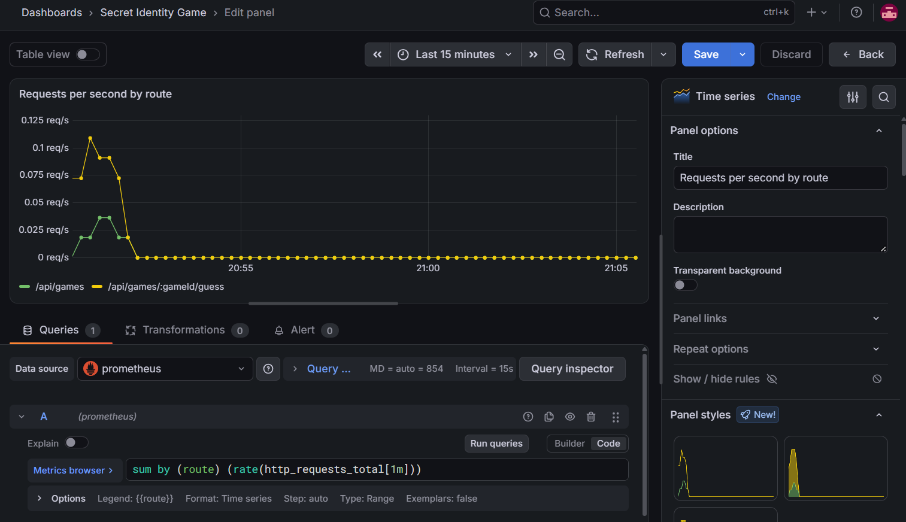
Raw samples from /metrics:
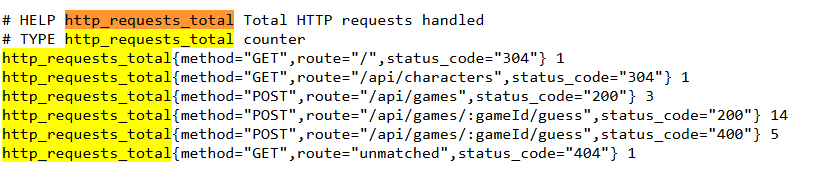
http_requests_total.Histogram — p95 latency (5m rate window for the quantile estimate):
histogram_quantile(0.95, sum by (le, route) (rate(http_request_duration_seconds_bucket[5m])))
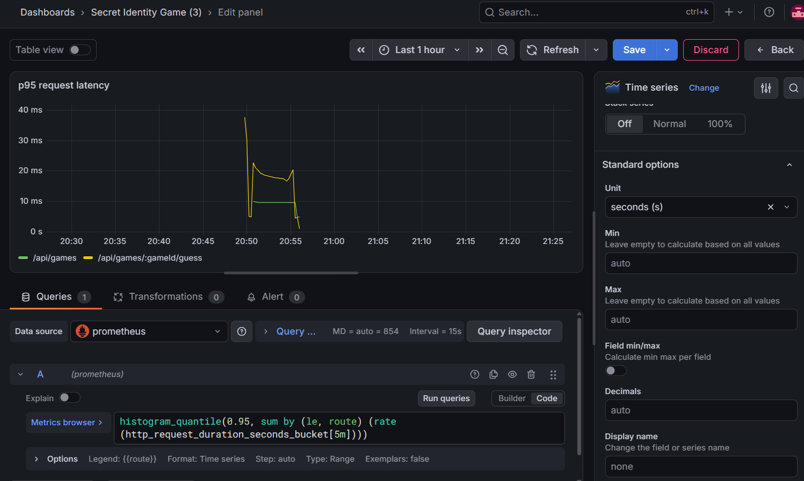
Gauge — active games: games_active
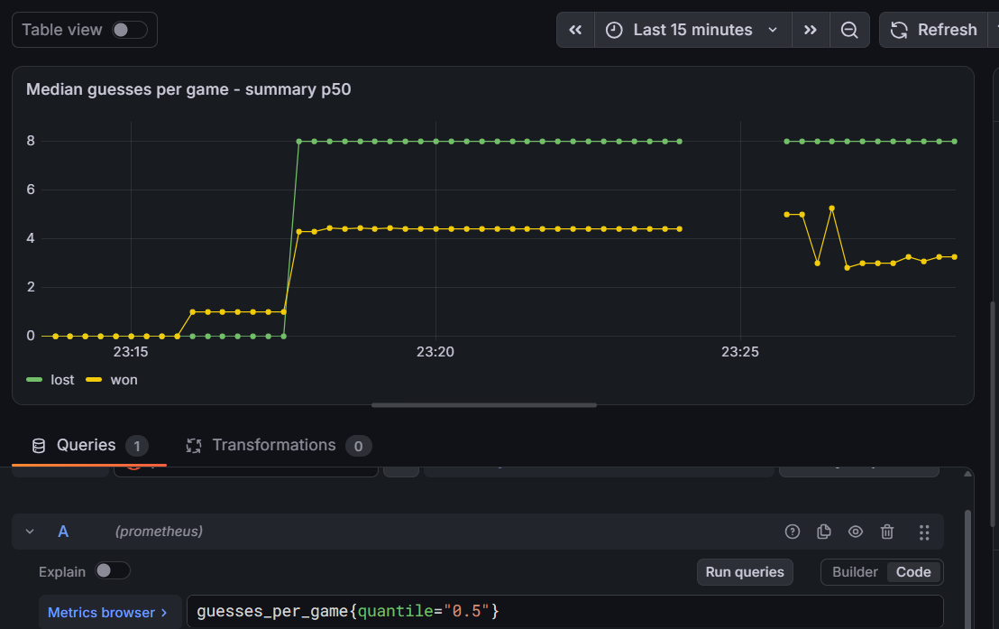
Summary — average (window ~10 minutes via maxAgeSeconds: 600):
sum(rate(guesses_per_game_sum[10m])) / sum(rate(guesses_per_game_count[10m]))
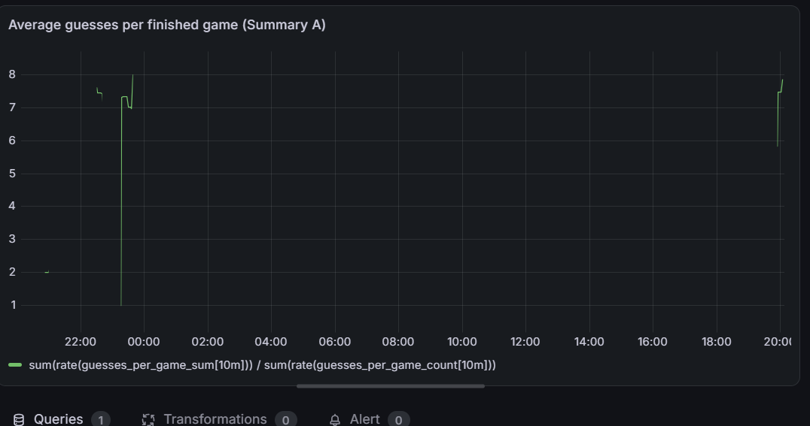
Summary — median (p50): guesses_per_game{quantile="0.5"}
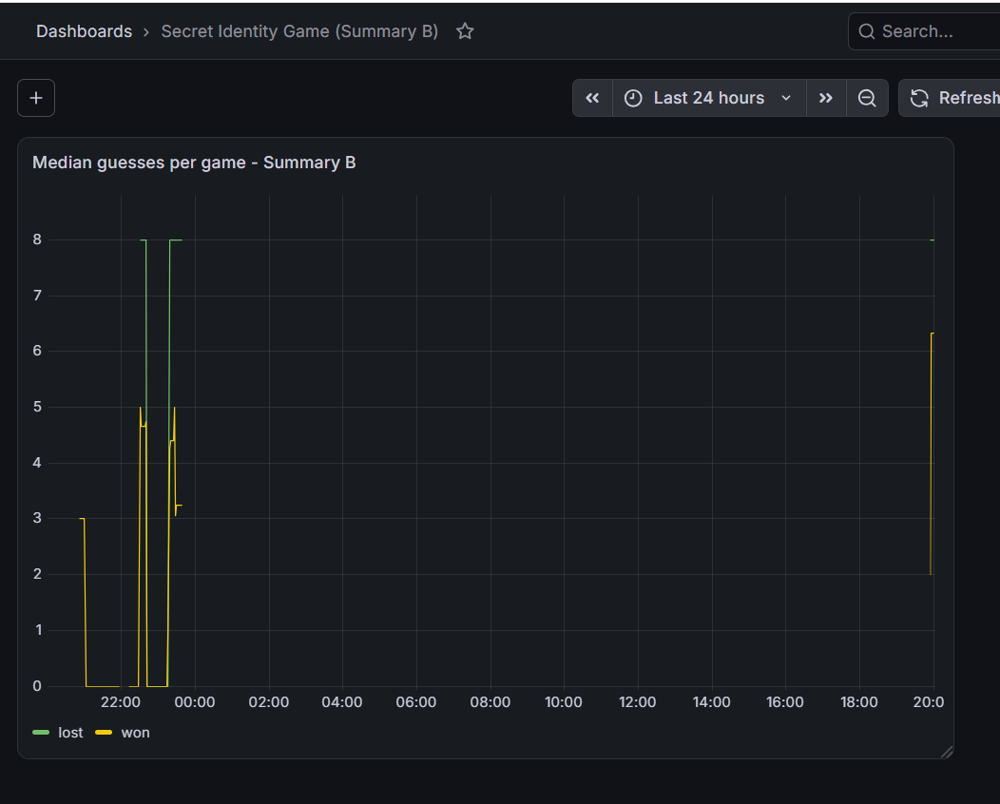
guesses_by_character_total — which characters players try most. Label set is bounded by the roster size.
topk(10, sum by (character) (guesses_by_character_total))
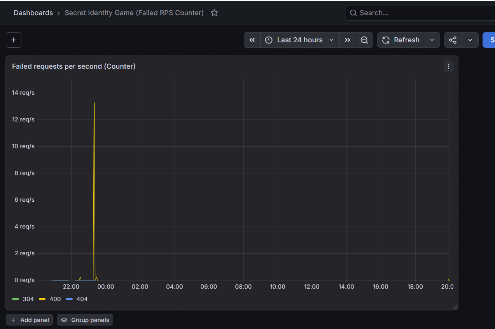
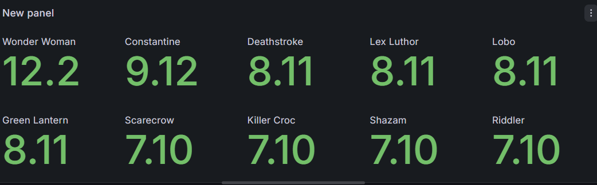
Machine name: docker-desktop-linux-vm. I imported the community Node Exporter Full dashboard for CPU, memory, disk, and network.
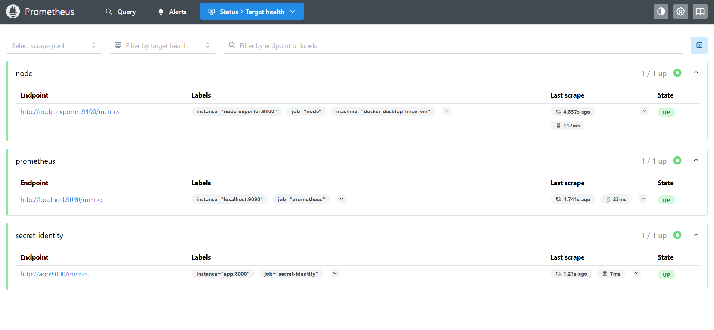
| Event | Why | Where |
|---|---|---|
request completed | method, route, status, duration_ms, request_id | Middleware |
| game started / guess made / game finished | Business trail without leaking the secret mid-game | Game routes |
| guess rejected | Bad / unknown / duplicate guesses | Guess validation |
| chaos delay injected | Part E fault visibility | Chaos middleware |
| errors | Unexpected failures | Error handler |
I do not log IPs, user-agents, passwords, or the secret while a game is running.
App JSON on stdout → Docker container logs → Filebeat (containers labeled co.elastic.logs/enabled=true; decode JSON) → Elasticsearch secret-identity-logs-* → Kibana Discover. Config: filebeat/filebeat.yml (same pattern as Lab 1).
| Place | Survives restart? | Cleared by |
|---|---|---|
| Docker container logs | Until rotate/remove | Docker log rotation |
Elasticsearch esdata volume | Yes | docker compose down -v |
| Filebeat registry | Yes | down -v |
ILM is off here, so indices stay until the volume is removed.
Data view secret-identity-logs-*, timestamp @timestamp.
Example original stdout line:
{"level":"info","service":"secret-identity","request_id":"…","method":"POST","route":"/api/games","status_code":200,"duration_ms":3.2,"message":"request completed","@timestamp":"2026-09-23T11:00:00.000Z"}
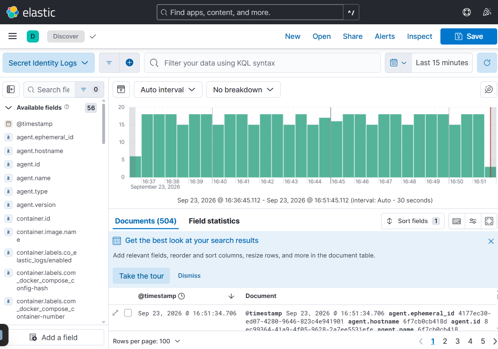
Useful KQL: service: "secret-identity", request_id: "…", level: error or level: warn, message: "chaos delay injected".
Browser / scripts
│ HTTP
▼
secret-identity-app :8000 ──stdout JSON──► Docker log files
▲ │
│ scrape /metrics (5s) │ read + decode
│ ▼
Prometheus :9090 ◄── scrape ── Node Exporter Filebeat
│ │
│ PromQL │ index
▼ ▼
Grafana :3000 Elasticsearch :9200
│
▼
Kibana :5601
| If this stops… | What happens |
|---|---|
| App | Players fail; metrics/logs go stale |
| Prometheus / Grafana | Game still works; charts empty/stale |
| Filebeat | Logs stay on disk only |
| Elasticsearch | Kibana cannot search; Filebeat retries |
| Kibana | Data still in ES |
Metrics want low-cardinality numbers; logs can carry high-cardinality fields like request_id. I am not claiming to know every line of Prometheus/Filebeat internals — mainly how they connect in this compose setup.
http_request_duration_seconds: middleware starts a timer → /metrics → Prometheus scrape → Grafana p95 query (Figures B.4–B.5; spike again in Part E).
request completed on stdout → Filebeat decode → ES → Kibana with request_id or message: "request completed" (Figure C.1).
Fault: every 5th request sleeps 500 ms (POST /chaos/delay?every=5&ms=500).
Prediction: p95 rises; warn logs chaos delay injected; players feel intermittent lag.
Method: node scripts/experiment-delay.js (baseline → inject → recover).
| Stage | p95 (approx., start-game route) |
|---|---|
| Baseline | ~5 ms |
| Delay on | ~853 ms |
| After recover | ~5 ms |
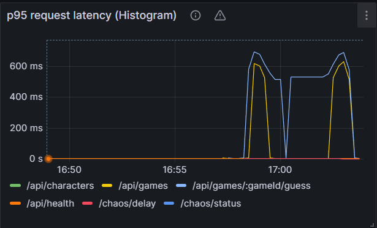
Cause / users: artificial sleep before handling, so about 1 in 5 actions feels slow. Clearing delay restores normal latency.
With ENABLE_CARDINALITY_LABEL=1, demo_requests_total gets a request_id label. After 100 unique hits:
| Mode | count(demo_requests_total) |
|---|---|
With request_id label | 100 |
| Label removed + restart | 1 |
At scale, unbounded labels create too many series and hurt Prometheus. IDs belong in logs, not metric labels. Old series can linger in history after the label is removed.
Sources. ESD Lab 1 (Midnight Launch) for the logging pipeline pattern; Prometheus label guidance; Grafana Node Exporter Full (rfmoz); Cursor assistance for compose/scripts wiring.
Code, configs, dashboards, and README are in the Assignment_1 project folder.